Born in Nijmegen, shaped by The Gambia, India, and Brazil. From mechanical engineering to smart grids, digital identity, and Digital Product Passports — the story of why I founded Regen Studio and why mere sustainability is no longer enough.
I grew up in Nijmegen, the oldest city in the Netherlands. Hockey taught me to think as a team. Latin showed me that language and maths aren't so different. A family year in Spain — my parents, my sister, and me — shaped me at fourteen into someone who feels at home anywhere. Our family travelled all over the world, and those trips made it feel small and close. TU Delft gave me an engineer's mind; its self-organising student communities showed me what people build when no one tells them to. The Gambia caught my attention to the power of energy in every global problem. India showed me complexity and chaos. The Hague shaped me into an innovator and creator. And Brazil is where I found my greatest love — and Regen Studio became inevitable.
Yvo's Career in Video
How Energy Access Shapes Lives
Lecture for TU Delft — Sustainable Energy for All
YouTube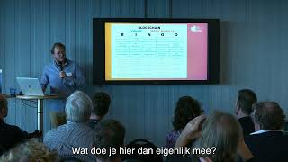
Pitching Energy Bazaar
Peer-to-peer energy trading — Topsector Energie
YouTube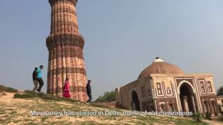
3 Months in Rural India
Field research diary — TU Delft Global
YouTube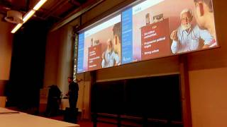
Defending My Master’s Thesis
Responsible Innovation Systems — TU Delft
YouTube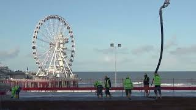
What Makes a City Smart?
Interview on smart city innovation — The Hague
YouTube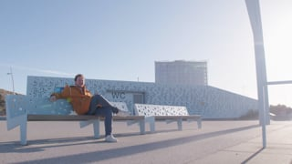
Building a Smart Electricity Grid
Living Lab Scheveningen — neighbourhood-scale
VimeoWhy Governments Need Open Source
Dutch national government MOOC
YouTube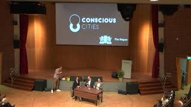
Designing a City Hackathon
Conscious Cities — The Hague
YouTubeThe Engineer's Foundation
My bachelor's in Mechanical Engineering taught me to think in systems — non-linear dynamics, fluid mechanics, system engineering, mechatronics. My final project focused on testing different designs for drill heads used in hip surgery. It was rigorous, challenging, and deeply technical. But I was restless. I wanted to understand the world beyond equations.
The Gambia — Where Everything Changed
A minor in International Entrepreneurship and Development sent me to The Gambia for three months. We were building a solar dryer for conserving fruits and vegetables in rural villages — a practical engineering challenge. But what struck me wasn't the technology. It was the realisation that access to sustainable energy is the key to so many of our environmental and social problems.
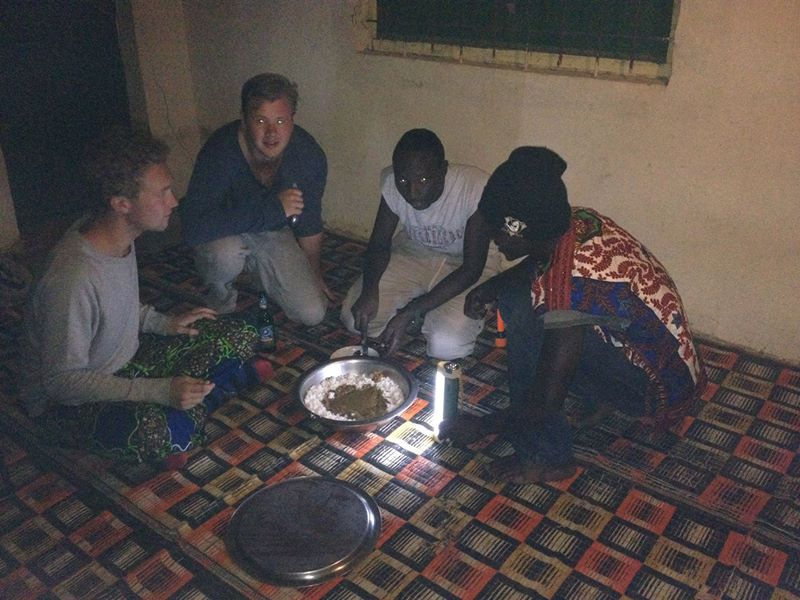
The solar dryer we built from local materials — designed to conserve fruits and vegetables without electricity.
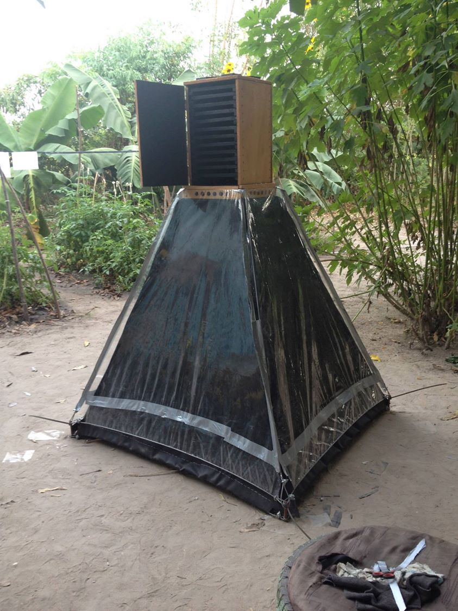
A local metalworker welding components for our project. The skill and ingenuity in these workshops was extraordinary.
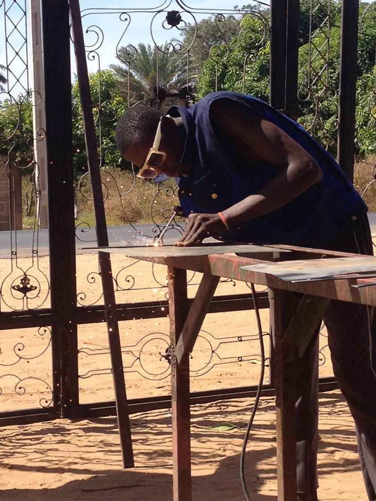
Sharing a meal on woven mats after a long day. In The Gambia, eating is communal — always from one bowl.
Families couldn't refrigerate food. Schools had no electricity after dark. Clinics couldn't power basic medical equipment. The technology to solve these problems existed. What was missing was the systemic conditions to make it work — the economic models, the institutional frameworks, the community buy-in.
India — Responsible Innovation
This realisation shaped my master's. I chose Sustainable Energy Technology at TU Delft, but I gravitated towards the human side of the energy transition. For my graduation research, I went to India to study how rural energy systems could be designed more responsibly — not just technically, but socially and institutionally.
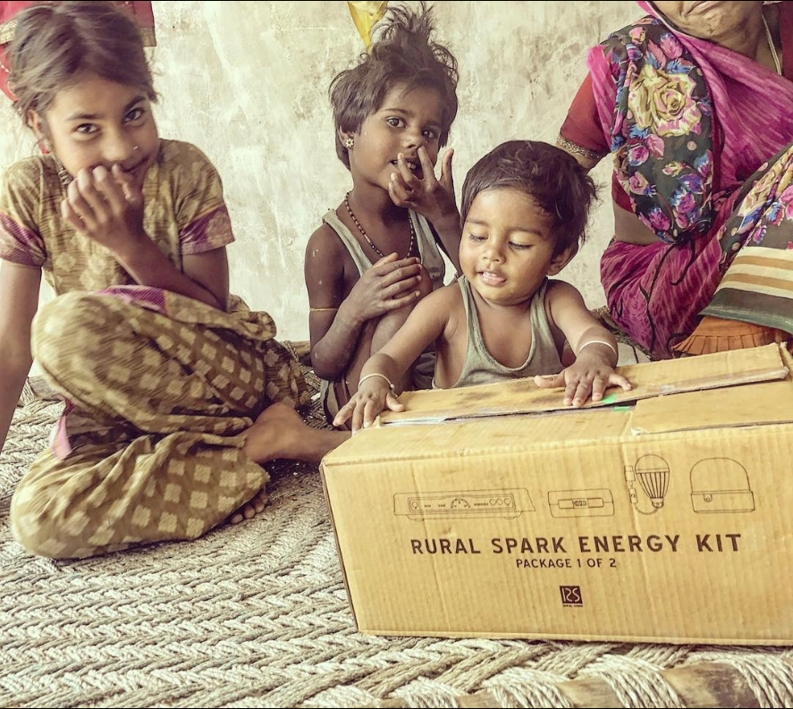
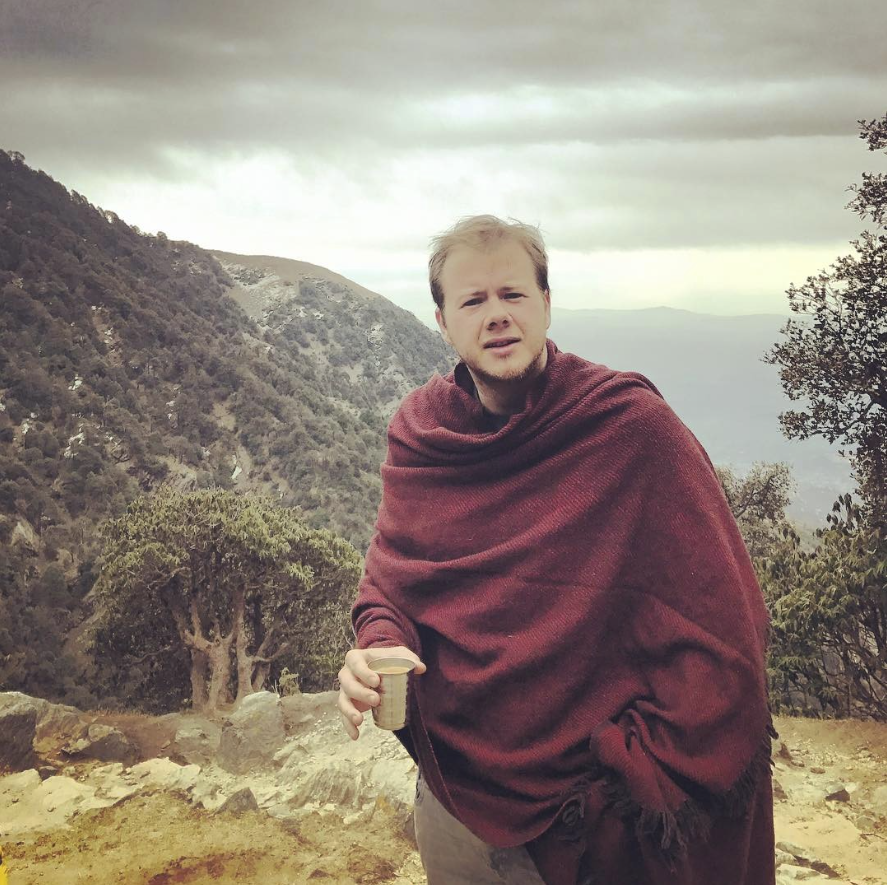
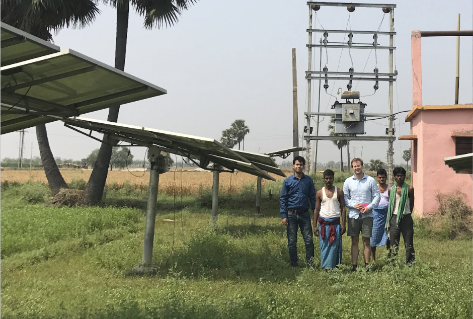
I graduated on Responsible Innovation Systems for the Rural Energy Sector in India, graded with an 8.5. The work also led to a published paper, Co-creating Responsible Energy Systems, presented at the 2018 International Conference and Exhibition on Smart Grids and Smart Cities.
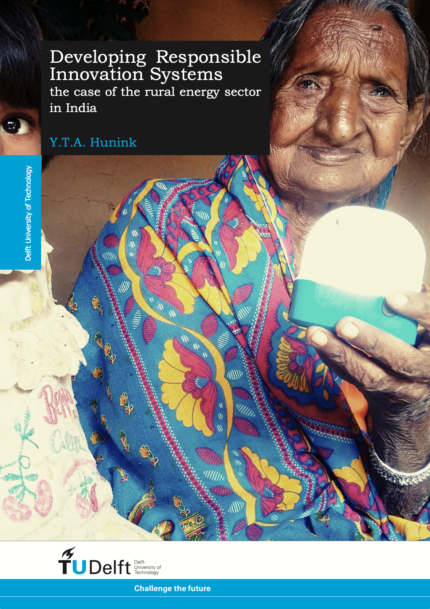
Master’s Thesis — TU Delft
Developing Responsible Innovation Systems: the case of the rural energy sector in India
Read the full thesis →
The core insight was simple but profound: most of the technology we need already exists. It is our societal and institutional systems that don't change fast enough. This became the thread running through everything I've done since.
Energy Bazaar — Building the Future Too Early
Fresh out of university, I co-founded Energy Bazaar — an AI and blockchain-based platform for peer-to-peer energy exchange in local energy systems. The idea was a bottom-up, decentralised, self-balancing local energy grid management system for rural use. We used a responsible innovation framework to guide our design and partnerships.
It was technically exciting and conceptually ahead of its time. But the economic business case wasn't there yet. The regulatory environment, the hardware costs, the market readiness — all pointed to the same conclusion: the world wasn't ready. It was a hard lesson in the difference between a good idea and a viable business.
The City of The Hague — Six Years of Public Innovation
After Energy Bazaar, I did independent work for the non-governmental and public sector before taking a full-time position at the City of The Hague. What started as an innovation advisor role to the CIO expanded over six years into leading smart energy, leading digital identity, and serving as a senior innovation advisor for the digital innovation team.
Those years were formative. I built a smart electricity grid. I organised innovation competitions. I experimented with digital identities and designed a COVID tracing solution. I worked on vision and strategy for digitisation and energy. And I guided over 50 students, interns, and trainees — learning as much from them as they did from me.
I've summarised my six years of digital innovations at the City of The Hague in a separate piece, if you're curious about the details.
Brazil — A Second Home
During a year of training in Biomimicry and Theory U at Spinwaves Lab, I deepened my understanding of how nature designs solutions and how we can learn from its patterns. I had already lived in Spain during my school years, but it was Brazil that truly captured me.
I married a Brazilian, and our life together brought me to São Paulo. Brazil — with its immense biodiversity, the Amazon, the Atlantic Rainforest, and its vibrant, complex cities — became a second home and a source of endless inspiration.
Iracambi — Where Nature Became the Mission
In 2022, I volunteered with Iracambi, an NGO working on forest conservation and restoration in the Atlantic Rainforest — a biome reduced to roughly 10% of its original size. I designed an experiment to test the viability of bioacoustics for biodiversity monitoring, installed sensors across different landscape types, analysed data for bird identification, and secured a grant for professional sound monitoring equipment.
Later, in 2024, I returned for the Smart Forest programme — writing a proposal for a green corridor combining agroforestry and green tourism, designing an AI-assisted grant writing process, and developing vision and strategy for Smart Forests.
This experience was the catalyst. It showed me that the themes I cared about — energy, cities, technology, systems — were incomplete without nature. Regeneration isn't just about human systems; it's about all living systems.
Regen Studio — Beyond Sustainability
By the time I founded Regen Studio in 2022, I had come to a conviction: sustainability alone is no longer enough. We've already crossed planetary boundaries that are pushing us towards tipping points. What we need isn't merely to sustain the current state — we need to regenerate. To rebuild what has been lost. To restore the capacity of natural, human, and urban ecosystems to thrive.
Regen Studio's first client was the Dutch Blockchain Coalition, where I first led the energy & sustainability theme — coordinating coalition partners, designing projects around tokenised carbon credits, publishing knowledge on sustainable supply chains and regenerative finance — and later became lead Digital Product Passports, building cross-sector coalitions to prepare for new EU regulations.
The studio now works across five themes: Energy Transition, Circular Economy, Liveable Cities, Digital Society, and Resilient Nature. Each one represents a piece of the puzzle I've been assembling my entire career.
A Father's Mission
Recently, I became a father. And while I've always been seriously concerned about the way our species treats each other and our planet, this concern has taken on a different quality. It's no longer abstract. It has a face, small hands, and a future that depends on what we do now.
This is why I do what I do. Not because it's a career — but because it's a responsibility. To design innovations that don't just solve problems, but regenerate the systems they touch. For my daughter, and for all the children who deserve a world that works.